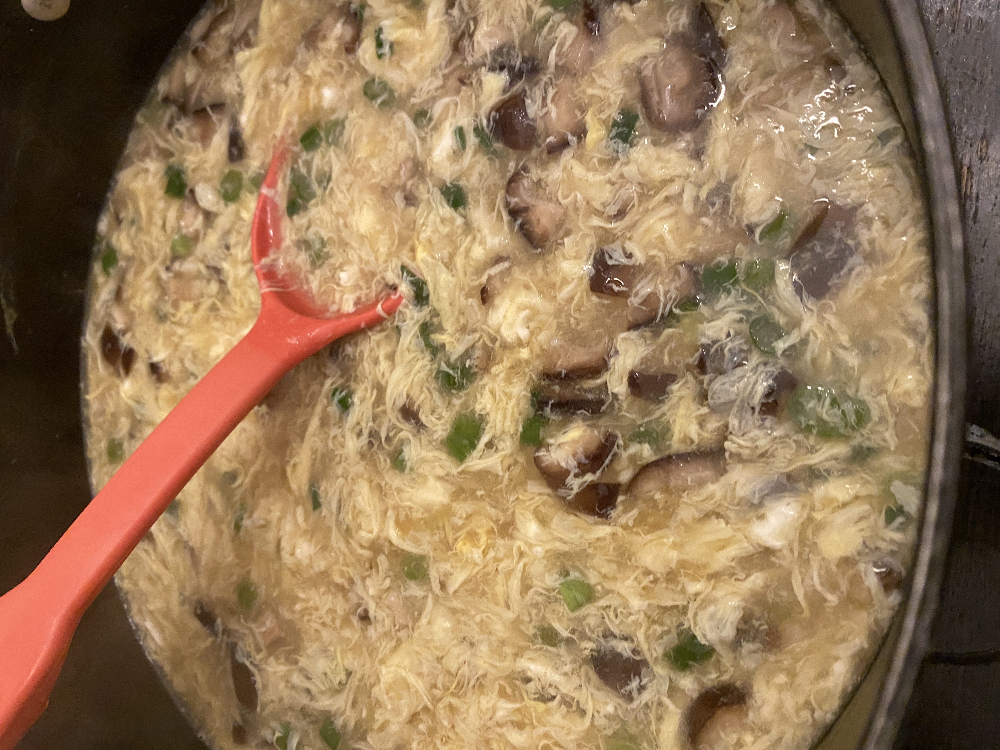

Home
Egg Drop Soup

Description
This easy Chinese egg drop soup is ready in less than 15 minutes and tastes just like the soup at your favorite Chinese restaurant! It's made with eggs, ginger, green onions, and mushrooms.
Ingredients
- 4 cups chicken stock, divided
- 1 tablespoon cornstarch
- 3/4 cup enoki mushrooms or sliced shiitake mushrooms
- 3 green onions, chopped
- 1 tablespoon soy sauce
- scant 1/2 teaspoon grated ginger
- 1/4 teaspoon white pepper
- 3 large eggs, lightly beaten
Steps
- Make the cornstarch slurry:
Measure out 1/2 cup of the stock and mix with the cornstarch until dissolved.
- Bring the soup ingredients to a boil:
Place the remaining chicken stock, mushrooms, green onions (reserving a few for garnish), ginger, soy sauce, and white pepper in a pot and bring to a boil. Stir in the cornstarch slurry and reduce the heat to a simmer.
- Stir in the beaten eggs:
Slowly pour in the beaten eggs while stirring the soup slowly. The egg will spread out into ribbons.
- Serve:
Turn off the heat and garnish with a few more chopped green onions. Serve immediately.